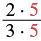
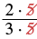
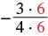
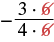
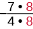
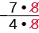
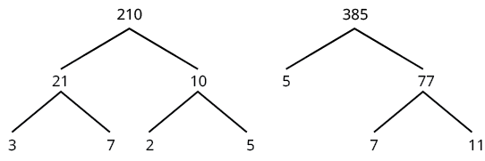
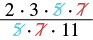

ভগ্নাংশ লঘিষ্ঠ আকারে প্রকাশ
উৎস-অনুগত উপবিভাগ · m81286-fs-id1408851। সম্পূর্ণ বইয়ের অনুবাদ এখনও চলছে। গাণিতিক চিহ্ন, সংখ্যা ও মূল কাঠামো অক্ষুণ্ণ; প্রযোজ্য ক্ষেত্রে সূত্রের শব্দলেবেল বাংলায় অনূদিত। মূল ছবির ভিতরের ইংরেজি লেবেলের অর্থ বাংলা বিবরণে আছে। স্বাধীন শিক্ষক ও ভাষা-পর্যালোচনা বাকি। অন্য উপবিভাগের উৎস-লিঙ্কে ইন্টারনেট প্রয়োজন।
ভগ্নাংশ লঘিষ্ঠ আকারে প্রকাশ
সমতুল ভগ্নাংশের পাঠে দেখেছ, একই মানের ভগ্নাংশ অনেকভাবে লেখা যায়। সেগুলি সমগ্রের একই অংশ বোঝায়। কোন রূপটি ব্যবহার করবে, তা বুঝবে কীভাবে? প্রায়ই আমরা ভগ্নাংশের লঘিষ্ঠ আকার ব্যবহার করব।
যদি একমাত্র সাধারণ গুণনীয়ক হয় তবে ভগ্নাংশটির লব ও হর-এর আর কোনও সাধারণ গুণনীয়ক নেই; তখন ভগ্নাংশটিকে লঘিষ্ঠ আকারে আছে বলা হয়। লব ও হরে অন্য কোনও সাধারণ গুণনীয়ক থাকলে সেই গুণনীয়ক দিয়ে উভয়কে ভাগ করে ভগ্নাংশকে লঘিষ্ঠ আকারে প্রকাশ করা যায়।
যেমন,
- লঘিষ্ঠ আকারে আছে। কারণ, 1 ছাড়া আর কোনও সাধারণ গুণনীয়ক নেই এই দুটি সংখ্যার: এবং
- লঘিষ্ঠ আকারে নেই। কারণ, সাধারণ গুণনীয়ক এই দুটি সংখ্যার: এবং
ভগ্নাংশকে লঘিষ্ঠ আকারে প্রকাশ করার প্রক্রিয়াকে প্রায়ই ভগ্নাংশের সংক্ষেপণ বলা হয়। আগের উপবিভাগে সমতুল ভগ্নাংশের ধর্ম ব্যবহার করে সমতুল ভগ্নাংশ নির্ণয় করেছি। সেই ধর্ম উল্টোভাবেও ব্যবহার করে ভগ্নাংশকে লঘিষ্ঠ আকারে প্রকাশ করা যায়। ধর্মটির দুটি রূপ একসঙ্গে লিখি।
লক্ষ করো, হল লব ও হর-এর একটি সাধারণ গুণনীয়ক। লব ও হরে একই অশূন্য গুণনীয়ক থাকলে সেই গুণনীয়ক দিয়ে উভয়কে ভাগ করা যায়।
অনুশীলন · এই প্রশ্নের লিঙ্ক
লঘিষ্ঠ আকারে প্রকাশ করো:
সমাধান
ভগ্নাংশটিকে লঘিষ্ঠ আকারে প্রকাশ করার জন্য লব ও হরের সাধারণ গুণনীয়ক খুঁজি।
| লক্ষ করো, 5 হল 10 ও 15 উভয়ের গুণনীয়ক। | |
| লব ও হরকে গুণনীয়কে বিশ্লেষণ করো। |  লব: 2 গুণ 5। হর: 3 গুণ 5। সাধারণ গুণনীয়ক 5 দুটি আলাদা রঙে দেখানো হয়েছে। |
| সাধারণ গুণনীয়ক দিয়ে লব ও হর ভাগ করো। |  লবে 2 গুণ 5 এবং হরে 3 গুণ 5। লব ও হরের সাধারণ গুণনীয়ক 5 দুটি কাটা হয়েছে; বাকি থাকে লব 2 ও হর 3। |
| সরল করো। |
ঋণাত্মক ভগ্নাংশকে লঘিষ্ঠ আকারে প্রকাশ করতেও উদাহরণ [fs-id1330187]-এর পদ্ধতিই ব্যবহার করি। ঋণচিহ্নটি রাখতে ভুলো না।
অনুশীলন · এই প্রশ্নের লিঙ্ক
লঘিষ্ঠ আকারে প্রকাশ করো:
সমাধান
| দেখা যায়, 6 হল 18 ও 24 উভয়ের গুণনীয়ক। | |
| সাধারণ গুণনীয়কটি দেখিয়ে লব ও হর আবার লেখো। |  ঋণাত্মক ভগ্নাংশ। লব: 3 গুণ 6। হর: 4 গুণ 6। ঋণচিহ্নটি ভগ্নাংশের বাইরে আছে। সাধারণ গুণনীয়ক 6 দুটি আলাদা রঙে দেখানো হয়েছে। |
| সাধারণ গুণনীয়ক দিয়ে লব ও হর ভাগ করো। |  ঋণাত্মক ভগ্নাংশের লবে 3 গুণ 6 এবং হরে 4 গুণ 6। সাধারণ গুণনীয়ক 6 দুটি কাটা হয়েছে। বাইরে ঋণচিহ্নটি বজায় আছে; বাকি থাকে লব 3 ও হর 4। |
| সরল করো। |
ভগ্নাংশকে লঘিষ্ঠ আকারে প্রকাশ করার পরে ফলটি অবশ্যই পরীক্ষা করো। লব ও হরে 1 ছাড়া আর কোনও সাধারণ গুণনীয়ক রয়ে গেছে কি না, দেখো। সংজ্ঞাটি মনে রেখো: লব ও হরের মধ্যে 1 ছাড়া আর কোনও সাধারণ গুণনীয়ক না থাকলে ভগ্নাংশটিকে লঘিষ্ঠ আকারে আছে বলা হয়।
অপ্রকৃত ভগ্নাংশকে লঘিষ্ঠ আকারে প্রকাশ করার সময় সেটিকে মিশ্র ভগ্নাংশে রূপান্তর করার দরকার নেই।
অনুশীলন · এই প্রশ্নের লিঙ্ক
লঘিষ্ঠ আকারে প্রকাশ করো:
সমাধান
| সাধারণ গুণনীয়ক 8 দেখিয়ে লব ও হর আবার লেখো। সম্পাদকীয় সতর্কতা: এই ধাপের ও পরের ধাপের মূল চিত্রে ঋণচিহ্নটি ছাপা হয়নি। রাশিটির ঋণচিহ্ন বজায় রাখো। |  মূল চিত্রে লবে 7 গুণ 8 এবং হরে 4 গুণ 8 দেখানো হয়েছে। সাধারণ গুণনীয়ক 8 দুটি আলাদা রঙে দেখানো। সতর্কতা: মূল চিত্রে রাশিটির ঋণচিহ্নটি ছাপা হয়নি; ঋণচিহ্ন রাখতে হবে। |
| সাধারণ গুণনীয়ক দিয়ে লব ও হর ভাগ করো। |  মূল চিত্রে লবে 7 গুণ 8 এবং হরে 4 গুণ 8; সাধারণ গুণনীয়ক 8 দুটি কাটা হয়েছে। সতর্কতা: চিত্রে না থাকলেও রাশিটির ঋণচিহ্ন রাখতে হবে। ফলে ঋণাত্মক ভগ্নাংশটির লব 7, হর 4। |
| সরল করো। |
কখনও লব ও হরের সাধারণ গুণনীয়ক সহজে খুঁজে পাওয়া যায় না। তখন লব ও হরকে মৌলিক গুণনীয়কে বিশ্লেষণ করা ভাল উপায়। মৌলিক গুণনীয়কগুলি খুঁজতে গুণনীয়ক-বৃক্ষ পদ্ধতি ব্যবহার করতে পারো। তার পরে সমতুল ভগ্নাংশের ধর্ম ব্যবহার করে সাধারণ গুণনীয়ক দিয়ে লব ও হর ভাগ করো।
অনুশীলন · এই প্রশ্নের লিঙ্ক
লঘিষ্ঠ আকারে প্রকাশ করো:
সমাধান
| গুণনীয়ক-বৃক্ষ ব্যবহার করে লব ও হরকে গুণনীয়কে বিশ্লেষণ করো। |  দুটি গুণনীয়ক-বৃক্ষ। প্রথমটিতে 210 থেকে 21 ও 10; 21 থেকে 3 ও 7; 10 থেকে 2 ও 5। তাই 210 সমান 2 গুণ 3 গুণ 5 গুণ 7। দ্বিতীয়টিতে 385 থেকে 5 ও 77; 77 থেকে 7 ও 11। তাই 385 সমান 5 গুণ 7 গুণ 11। |
| লব ও হরকে মৌলিক সংখ্যাগুলির গুণফল হিসেবে আবার লেখো। | |
| সাধারণ গুণনীয়ক দিয়ে লব ও হর ভাগ করো। |  লব: 2 গুণ 3 গুণ 5 গুণ 7। হর: 5 গুণ 7 গুণ 11। লব ও হরের সাধারণ গুণনীয়ক 5 ও 7 কাটা হয়েছে। |
| সরল করো। | |
| লবে ও হরে বাকি থাকা গুণনীয়কগুলি গুণ করো। |
চল রয়েছে এমন ভগ্নাংশও সরল করা যায়। কোনও চল যদি লব ও হর-এর সাধারণ গুণনীয়ক হয়, তবে পূর্ণসংখ্যা গুণনীয়কের মতোই সেই চল দিয়ে উভয়কে ভাগ করি। মনে রেখো, হর শূন্য হতে পারে না; যে চল দিয়ে ভাগ করছ, তার মানও শূন্য হতে পারে না।
অনুশীলন · এই প্রশ্নের লিঙ্ক
সরল করো:
সমাধান
| সাধারণ গুণনীয়কগুলি দেখিয়ে লব ও হর আবার লেখো। | |
| সাধারণ গুণনীয়ক দিয়ে লব ও হর ভাগ করো। | |
| সরল করো। |